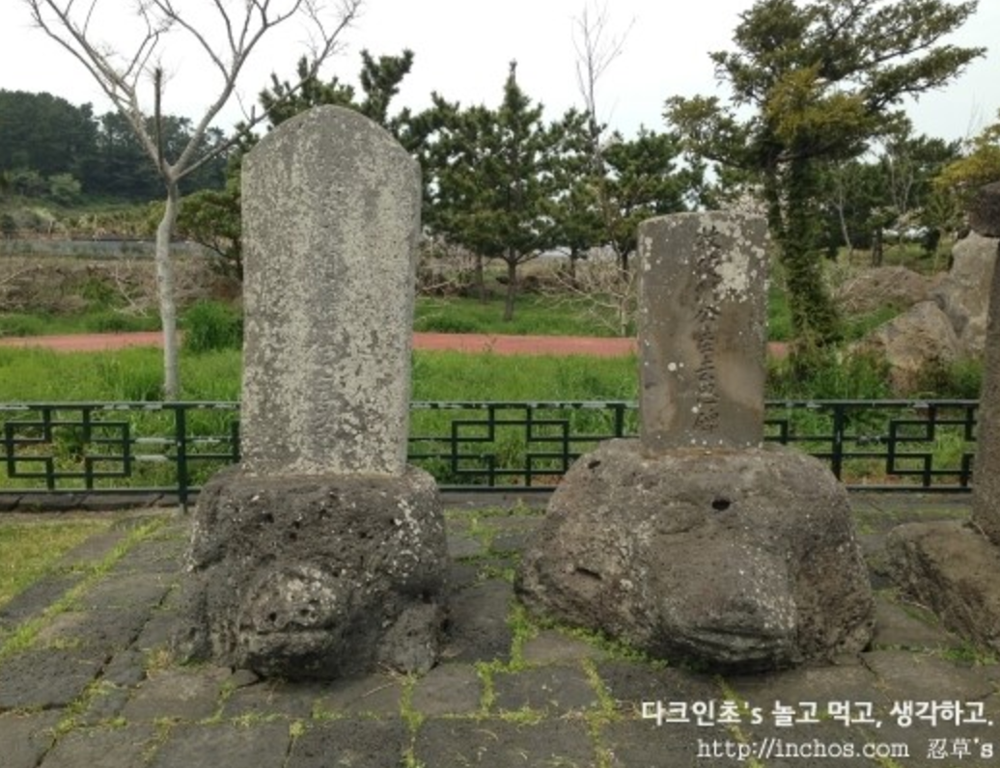
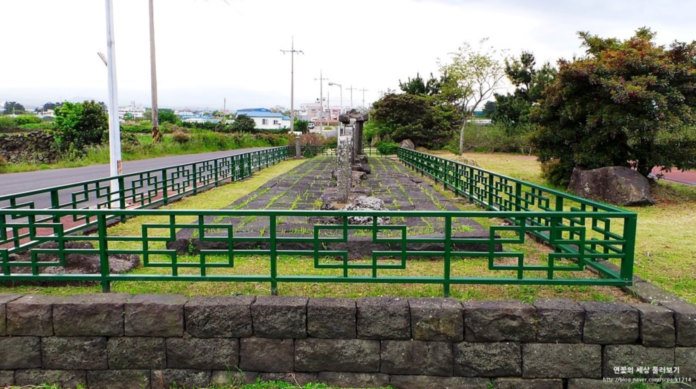

<화북비석거리>
>제주특별자치도 제주시 화북동3957번지 별도천도로변
제주도에는 역사가 오래된 마을마다 비석거리가 존재한다. 화북 포구 근처에 자리하고 있는 화북비석거리는 제주도 기념물 제 30호이다. 화북 포구는 제주성과 가장 가까운 위치의 포구이다. 따라서 많은 관리들, 제주목사등이 이곳을 거쳐 부임 또는 이임을 하였는데 이때 이들은 부임하거나 떠나며 처음 발을 디딘 혹은 마지막으로 떠나는 이 곳에 자신의 공적을 기념하고자 많은 비를 세웠다. 화북동 거리에 다른 지역보다 많은 13기의 비석이 남아 있는 이유도 이 때문이다. 비석에는 당시 관리들의 행적과 석별의 정 따위가 기록되어 있다. 제주목사를 지낸 윤구동·이원달·이현공, 찰리사를 지낸 이규원, 판관을 지낸 고경준 등이 주인공들이다.
<Hwabuk Tombstone street>
Bungeebyulcheondoro byeon 3957 hwabukdong Jejusi Jeju
In Jeju, there are tombstone streets in every old town. Hwabuk tombstone street, which is placed near Hwabuk harbour, is the 30th Jeju monument. Hwabuk harbour is the closest harbour to Jeju castle. Therefore, many officials started or resigned their positions there. They set up a monument to commemorate their contribution, which is the reason for 13 tombstones remaining at Hwabukdong street, which is much more than other places. Achievements of officials and sorrow at parting are recorded on the tombstones.
References:

"Hwabuk Tombstone Street." Cultural Heritage Administration. Cultural Heritage Administration, n.d. Web. 22 Feb. 2017. <http://www.cha.go.kr/korea/heritage/search/Culresult_Db_View.jsp?mc=NS_04_03_01&VdkVgwKey=23%2C00300000%2C50>.
"화북 비석거리." 화북 비석거리. Doopedia, n.d. Web. 22 Feb. 2017. <http://terms.naver.com/entry.nhn?docId=1194261&cid=40942&categoryId=33383>.
Image references:
Jeju Hwabuk Tombstone Street, Tells Jeju's History. Digital image. 사랑해. Scpark1214, 5 Nov. 2016. Web. 22 Feb. 2017. <http://blog.naver.com/scpark1214?Redirect=Log&logNo=220707245192>.
제주걷는 다크인초 : 네이버 블로그. Digital image. 제주걷는 다크인초 : 네이버 블로그. Inchos, 8 Apr. 2014. Web. 22 Feb. 2017. <http://inchos.com/80210757804>.